The slope of a two-dimensional function (in higher dimensions, the term gradient is used instead of "slope"; in particular, the gradient is the vector of partial derivatives) can be thought of as the rate of change for that function.
For a linear function $f(x) = ax+b$, $a$ is the slope; it is constant for all $x$ throughout the function.
But for non-linear functions, e.g. $f(x) = 3x^2$, the slope varies along with $x$.
Differentation is a way to find another function, called the derivative of the original function, that gives us the rate of change (slope) of one variable with respect to another variable.
It tells us how to change the input in order to get a change in the output:
This will become useful later on - many machine learning training methods use derivatives (in particular, multidimensional partial derivatives, i.e. gradients) to determine how to update weights (inputs) in order to reduce error (the output).
Computing derivatives
Say that we want to compute the rate of change (slope) at a single point. How? It takes two points to define a line, which we can easily compute the slope for.
Instead of a single point, we can consider two points that are very, very close together:
$$
(x, f(x)) \text{and} (x+h, f(x+h))
$$
Note that sometimes $\delta$ or $\delta x$ is used instead of $h$.
If this limit exists, we say that $f$ is differentiable at $x$ and that its derivative at $x$ is $f'(x)$.
Example
We have a car and have a variable $x$ which describes its position at a given point in time $t$. That is, $f(t) = x$.
With differentiation we can get $\frac{dx}{dt}$ which is the rate of change of the car's position wrt to time, i.e. the speed (velocity) of the car.
Note that this is not the same as $\frac{\Delta x}{\Delta y}$, which gives us the change in $x$ over a time interval $\Delta t$. This is the average velocity over that time interval.
If instead we want instantaneous velocity - the velocity at a given point in time - we need to have the time interval $\Delta t$ approach $0$ (we can't set $\Delta t$ to $0$ because then we have division by 0). This is equivalent to the derivative described previously:
The chain rule is very useful when you recompose functions in terms of nested functions.
Example
Given $f(x) = (x^2 + 1)^3$, we can define another function $u(x) = x^2 + 1$, thus we can rewrite $f(x)$ in terms of $u(x)$, that is: $f(x) = u(x)^3$.
We can apply the chain rule: $\frac{df}{dx} = \frac{df}{du} \cdot \frac{du}{dx}$.
Then substitute: $\frac{df}{dx} = \frac{d}{du}[u^3] \cdot \frac{d}{dx}(x^2 + 1)$.
Then we can just apply the rest of our rules: $\frac{df}{dx} = 3u^2 \cdot 2x$.
Then substitute again: $\frac{df}{dx} = 3(x^2+1)^2 \cdot 2x$ and simplify.
Higher order derivatives
The derivative of a function as described above is the first derivative.
The second derivative, or second order derivative, is the derivative of the first derivative, denoted $f''(x)$.
There's also the third derivative, $f'''(x)$, and a fourth, and so on.
Any derivative beyond the first is a higher order derivative.
Notation
The above notation gets unwieldy, so there are alternate notations.
For the $n^{th}$ derivative:
$f^{(n)}(x)$ (this is to distinguish from $f^n(x)$ which is the quantity $f(x)$ raised to the $n^{th}$ power)
$\frac{d^n f}{dx^n}$ (Leibniz notation)
$\frac{d^n}{dx^n}[f(x)]$ (another form of Leibniz notation)
$D^n f$ (Euler's notation)
Explicit differentiation
When dealing with multiple variables, there is sometimes the option of explicit differentiation. This simply involves expressing one variable in terms of the other.
For example: $x^2 + y^2 = 1$. This can be rewritten in terms of $x$ like so: $y = \pm(1-x^2)^{1/2}$.
Implicit differentiation is useful for differentiating equations which cannot be explicitly differentiated because it is impossible to isolate variables. With implicit differentiation, you do not need to define one of the variables in terms of the other.
For example, using the same equation from before: $x^2 + y^2 = 1$.
First, differentiate with respect to $x$ on both sides of the equation:
A global maximum (or absolute maximum) of a function $f$ on a closed interval $I$ is a value $f(c)$ such that $f(c) \ge f(x)$ for all $x$ in $I$.
A global minimum (or absolulte minimum) of a function $f$ on a closed interval $I$ is a value $f(c)$ such that $f(c) \le f(x)$ for all $x$ in $I$.
The extreme value theorem states that if $f$ is a function that is continuous on the closed interval $[a, b]$, then $f$ has both a global minimum and a global maximum on $[a, b]$. It is assumed that $a$ and $b$ are both finite.
Extrema and inflection/inflexion points
Note that at anyextremum (i.e. a minimum or a maximum), global or local, the slope is 0 because the graph stops rising/falling and "turns around". For this reason, extrema are also called stationary points or turning points.
Thus, the first derivative of a function is equal to 0 at extrema. But the converse does not hold true: the first derivative of a function is not always an extrema when it equals 0. This is because a slope of 0 may also be found at a point of inflection:
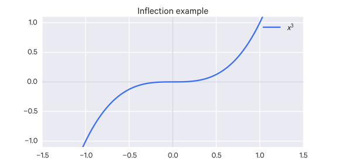An example of inflection.
To discern extrema from inflection points, you can use the extremum test, aka the second derivative test.
If the second derivative at the stationary point is positive (increasing) or negative (decreasing), then we know we have a minimum or a maximum, respectively.
The intuition here is that the rate of change is also changing at extrema (e.g. it is going from a positive slope to a negative slope, which indicates a maximum, or the reverse, which indicates a minimum).
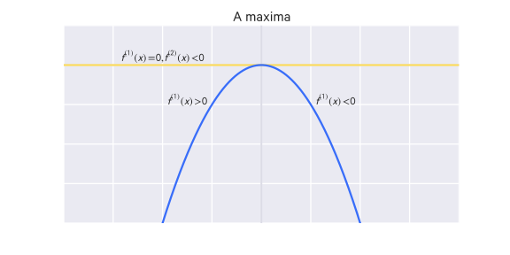A maxima, where the second derivative is negative
However, if the second derivative is also 0, then we still have not distinguished the point. It may be a saddle point or on a flat region. What you can do is continue differentiating until you get a non-zero result.
If we take $n$ to be the order of the derivative yielding the non-zero result, then if $n-1$ is odd, we have a true extremum. Again, if it the non-zero result is positive, then it is a minimum, if it is negative, it is maximum.
However, if $n-1$ is even, then we have a point of inflection.
Critical points
A critical point are points where the function's derivative are $0$ or not defined. So stationary points are critical points.
Rolle's Theorem
If a function $f(x)$ is continuous on the closed interval $[a, b]$, is differentiable on the open interval $(a, b)$, and $f(a) = f(b)$, then there exists at least one number $c$ in the interval $(a, b)$ such that $f'(c) = 0$.
This is basically saying that if you have an interval which ends with the same value it starts with, at some point in that curve the slope will be 0:
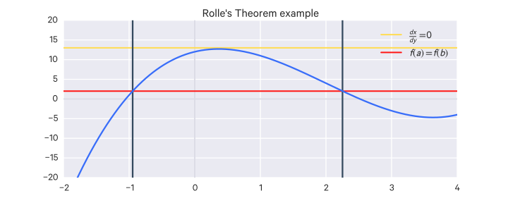
Mean Value Theorem
If $f(x)$ is continuous on the closed interval $[a, b]$ and differentiable on the open interval $(a, b)$, there exists a number $c$ in the open interval $(a, b)$ such that
$$
f'(c) = \frac{f(b)- f(a)}{b-a}
$$
This is basically saying that there is some point on the interval where its instantaneous slope is equal to the average slope of the interval.
Rolle's Theorem is a special case of the Mean Value Theorem where $f(a) = f(b)$.
L'Hopital's Rule
An indeterminate limit is one which results in $\frac{0}{0}$ or $\frac{\pm\infty}{\pm\infty}$.
If $\lim_{x \to c} \frac{f(x)}{g(x)}$ is indeterminate of type $\frac{0}{0}$ or $\frac{\pm\infty}{\pm\infty}$, then $\lim_{x \to c} \frac{f(x)}{g(x)} = \lim_{x \to c} \frac{f'(x)}{g'(x)}$.
If the resulting limit here is also indeterminate, you can re-apply L'Hopital's rule until it is not.
Note that $c$ can be a finite value, $\infty$, or $-\infty$.
Taylor Series
Certain functions can be expressed as an expansion of itself around a point $a$. This expansion is known as a Taylor series and is an infinite sum of that function and its derivatives around $a$:
When $a=0$, the series is known as a Maclaurin series.
Integration
Definite integral
How can we find the area under a graph?
We can try to approximate the area using a finite number ($n$) of rectangles. The area of rectangles are easy to calculate so we can just add up their area.
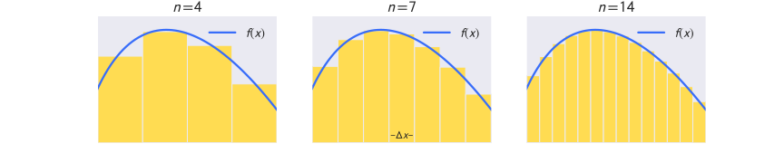Integration
The more rectangles (i.e. increasing $n$) we fit, the better the approximation.
So we can have $n \to \infty$ to get the best approximation of the area under the curve.
Say we have a function $f(x)$ that is positive over some interval $[a,b]$. The width of each rectangle over that interval, divided into $n$ rectangles (subintervals), is $\Delta x = \frac{b-a}{n}$.
The endpoint of an subinterval can be denoted $x_i$, for $i=0,1,\dots,n$.
For each $i^{th}$ subinterval, we pick some sample point $x_i^*$ in the interval $[x_{i-1}, x_i]$. This sample point is the height of the $i^{th}$ rectangle.
Thus, for the $i^{th}$ rectangle, we have as its area:
$$
a_i = x_i^* \frac{b-a}{n}
$$
or
$$
a_i = x_i^* \Delta x
$$
So the total area for the interval is:
$$
A_n = \sum_{i=1}^n f(x_i^*)\Delta x
$$
This kind of area approximation is called a Riemann sum.
The best approximation then is:
$$
\lim_{n \to \infty} \sum_{i=1}^n f(x_i^*)\Delta x
$$
So we define the definite integral:
Suppose $f$ is a continuous function on $[a, b]$ and $\Delta x = \frac{b-a}{n}$. Then the definite integral of $f$ between $a$ and $b$ is:
Suppose $f(x) \ge 0$ for all $x$ in $[a, b]$. Then $\int_a^b f(x)dx \ge 0$.
Suppose $f(x) \ge g(x)$ for all $x$ in $[a, b]$. Then $\int_a^b f(x)dx \ge \int_a^b g(x)dx$.
Suppose $M \ge f(x) \ge m$ for all $x$ in $[a, b]$. Then $M(b-a) \ge \int_a^b f(x)dx \ge m(b-a)$.
Additivity with respect to endpoints: Suppose $a < c < b$. Then $\int_a^b f(x)dx = \int_a^c f(x)dx + \int_c^b f(x)dx$.
This is basically saying the area under the graph from $a$ to $b$ is equal to the area under the graph from $a$ to $c$ plus the area under the graph from $c$ to $b$, so long as $c$ is some point between $a$ and $b$.
Power rule of integration: As long as $n \neq 1$ and $0 \notin [a,b]$, or $n>0$, $\int_a^b x^ndx = \frac{x^{n+1}}{n+1}|_a^b = \frac{b^{n+1} - a^{n+1}}{n+1}$
Mean Value Theorem for Integration
Suppose $f(x)$ is continuous on $[a, b]$. Then $\frac{\int_a^b f(x)dx}{b-a} = f(c)$ for some $c$ in $[a, b]$.
Antiderivatives
If we have a function $f$ which is the derivative of another function $F$, i.e. $f = F'$, then $F$ is an antiderivative of $f$.
Generally, a function $f$ has many antiderivatives because of how constants work in derivatives.
So we usually include a $+C$ term, i.e. $F(x) + C$, to indicate that any constant can be added and still derive to $f$. Thus $F$ often refers to a set of functions rather than a unique function.
We say that the integral of $f$ is equal to this set of functions:
$$
\int f(x)dx = F(x) + C
$$
This is the indefinite integral since we are not specifying a range the integral is computed over. Thus, we are not given an explicit value but rather the function(s) that results (this typically includes the ambiguous $C$ term).
Here $f$ is known as the integrand.
In a definite integral, we specify the upper and lower limits:
$$
\int_a^b f(x)dx = F(x) + C
$$
The fundamental theorem of calculus
The fundamental theorem of calculus connects the concept of a derivative to that of an integral.
Suppose that $f$ is continuous on $[a, b]$.
We can define a function $F$ like so:
$$
F(x) = \int_a^x f(t)dt \text{ for } x \in [a,b]
$$
Suppose $f$ is continuous on $[a,b]$ and $F$ is defined by $F(x) = \int_a^x f(t)dt$.
Then $F$ is differentiable on $(a,b)$ for all $x \in (a,b)$, i.e.:
$$
F'(x) = f(x)
$$
Thus $F$ is the set of antiderivatives for $f$.
Suppose $f$ is continuous on $[a,b]$ and $F$ is any antiderivative of $f$. Then:
$$
\int_a^b f(x)dx = F(b) - F(a)
$$
Note that $F(b) - F(a)$ may be notated as $F(x)|_a^b$.
To understand why this is so, consider:
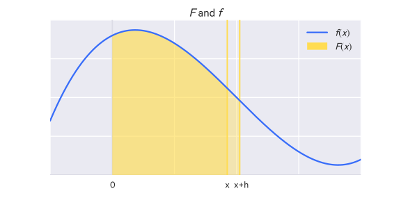$F$ and $f$
Say that $F(X)$ gives the area under $f(x)$ from $0$ to $x$.
If we want to compute the area under $f(x)$ between $x$ and $x+h$, we can do so like:
$$
\frac{F(x+h) - F(x)}{h}
$$
Note that this is also how the derivative is calculated.
Thus we have shown that $F'(x) = f(x)$, that is, that $F$ is the antiderivative of $f$.
Given some arbitrary:
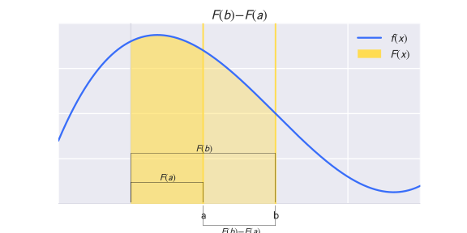$F(b)-F(a)$
We know that this is also equal to:
$$
\int_a^b f(x)dx
$$
Therefore:
$$
\int_a^b f(x)dx = F(b) - F(a)
$$
Basic properties of indefinite integrals
The integral rules defined above still apply.
Power rule for indefinite integrals: For all $n \neq -1$, $\int x^ndx = \frac{1}{n+1}x^{n+1} + C$
Integral of the inverse function: For $f(x) = \frac{1}{x}$, remember that $\frac{d}{dx}\ln x = \frac{1}{x}$, so $\int \frac{dx}{x} = \ln|x| + C$
Integral of the exponential function: Because $\frac{d}{dx}e^x = e^x$, $\int e^x dx = e^x + C$
The substitution rule for indefinite integrals: Assume $u$ is differentiable with a continuous derivative and that $f$ is continuous on the range of $u$. Then $\int f(u(x))\frac{du}{dx}dx = \int f(u)du$.
Remember that $\frac{du}{dx}$ is not a fraction, so you're not just "canceling" things out here.
Integration by parts
Suppose $f$ and $g$ are differentiable and their derivatives are continuous. Then:
You set $f(x)$ in the following order, called ILATE:
I for inverse trigonometric functions
L for log functions
A for algebraic functions
T for trigonometric functions
E for expontential functions
Improper integrals
There are two types of improper integrals:
Those on an unbounded function, e.g.:
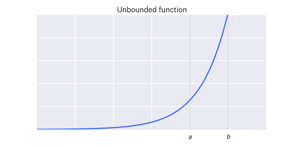An unbounded function
$$
\int_a^b f(x)dx
$$
Those on an unbounded interval, e.g.:
$$
\int_a^{+\infty} f(x)dx
$$
The integral on an unbounded function depicted above is known as an "improper integral with infinite integrand at $b$". To compute such an integral, we just consider a point infinitesimally previous to $b$:
Finally, if $f$ has a discontnuity at a point $c$ in $(a, b)$ and is continuous at all other points in $[a, b]$, if both $\int_a^c f(x)dx$ and $\int_c^b f(x)dx$ converge, we define
We are frequently dealing with data in many dimensions, so we must expand the previous concepts of derivatives and integrals to higher-dimensional spaces.
Integration
Double integrals
A definite integral for $y = f(x)$ is the area under the curve of $f(x)$, which is the sum of the areas of infinitely small rectangles assembled in the shape of the curve.
But say we are working with three dimensions, i.e. we have $z = f(x,y)$. Then the volume under the surface of $f(x,y)$ is the sum of the volumes of infinitely small chunks in the shape of the surface.
The area of one face of that chunk is the area under the curve, with respect to $x$, from $x=0$ to $x=b$ (in the illustration below), i.e. the integral:
$$
\int_0^b f(x,y)dx
$$
Because this is with respect to $x$, this integral will be some function of $y$, e.g. $g(y)$.
To get the volume of this chunk, we multiply that area by some depth $dy$, so the volume of a chunk is:
$$
\left(\int_0^b f(x,y)dx \right)dy
$$
So if we want to get the volume in the bounds of $y=0$, $y=a$, then we integrate again:
$$
\int_0^a \left(\int_0^b f(x,y)dx \right)dy
$$
A double integral!
It is also written without the parentheses:
$$
\int_0^a \int_0^b f(x,y)dxdy
$$
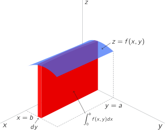Illustration of a double integral.
Note that here we first integrated wrt to $x$ and then $y$, but you can do it the other way around as well (integrate wrt $y$ first, then $x$).
Note: the lower bounds here were 0 but that's just an example.
Another way of conceptualizing double integrals
You could instead conceptualize the double integral as the sum of the volumes of infinitely small columns:
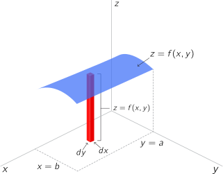Another illustration of a double integral.
The area of each column's base, $dx \cdot dy$, is sometimes notated as $dA$.
Variable boundaries
In the previous example we had fixed boundaries (see accompanying illustration, on the left).
What if instead we have a variable boundary (see accompanying illustration, on the right. The lower $x$ boundary varies now).
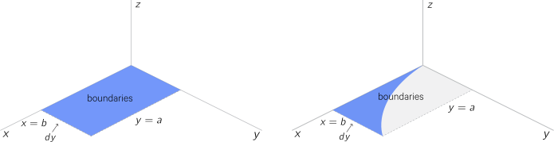Illustration of variable boundaries.
Well you express variable boundaries as a functions. As is the case in the example above, the lower $x$ boundary is some function of $y$, $g(y)$. So the volume would be:
$$
\int_0^a \int_{g(y)}^b f(x,y)dxdy
$$
That's if you first integrate wrt to $x$. If you first integrate wrt to $y$, instead the upper $y$ boundary is varying and that would be some function of $x$, $h(x)$, i.e.:
$$
\int_0^b \int_0^{h(x)} f(x,y)dydx
$$
Triple integrals
Triple integrals also involve infinitely small volumes and in many cases are no different than double integrals.
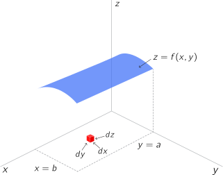Illustration of a triple integral.
So why use triple integrals? Well they are good for calculating the mass of something - if the density under the surface is not uniform. The density at a given point is expressed as $f(x,y,z)$, so the mass of a variably dense volume can be expressed as:

Say you have a function $z = f(x,y)$.
With two variables, we are now working in three dimensions. How does differential calculus work in 3 (or more) dimensions? In three dimensions, what is the slope at a given point? Any given point has an infinite number of tangent lines (only one tangent plane though). So when you take a derivative in three dimensions, you have to specify what direction that derivative is in.
Say we have $z = x^2 + xy + y^2$. If we want to take a derivative of this function, we have to hold one variable constant and derive with respect to the other variable. This derivative is called a partial derivative. If we were doing it wrt to $x$, then it would be notated as:
The partial derivative tells us how much the output of a function $f$ changes with the given variable. As alluded to earlier, this is important for machine learning because it tells us how a change in each weight in a multidimensional problem will affect $f$.
Directional derivatives
Partial derivatives can be generalized into directional derivatives, which are derivatives with respect to to any arbitrary line (it does not have to be, for example, with respect to the $x$ or $y$ axis). That is, with respect to any arbitrary direction. We represent a direction as a unit vector.
Gradients
A gradient is a vector of all the partial derivatives at a given point, which is to say it is a generalization of the derivative from two-dimensions to higher dimensions.
The gradient of a function $f$, with a vector input $w = [w_1, \dots, w_d]$ is notated:
The gradient of some function $f(x,y)$, i.e. $z = f(x,y)$ is:
$$
\nabla f = f_x \hat i + f_y \hat j
$$
That is, the partial derivative of $f$ wrt to $x$ times the unit vector in the $x$ direction, $\hat i$, plus the partial of $f$ wrt to $y$ times the unit vector in the $y$ direction, $\hat j$.
It can also be written (this is just different notation):
$$
\nabla f = \frac{\partial}{\partial x} f(x,y) \hat i + \frac{\partial}{\partial y} f(x,y) \hat j
$$
It's worth noting that this can be thought of in terms of matrices, i.e. given some function $f : \mathbb R^{m \times n} \to \mathbb R$ (that is, it takes a matrix $A \in \mathbb R^{m \times n}$ and returns a real value), then the gradient of $f$, with respect to the matrix $A$, is the matrix of partial derivatives:
For $t \in \mathbb R, \nabla_x (tf(x)) = t \nabla_x f(x)$
Example
Say we have the function $f(x,y) = x^2 +xy+y^2$.
Using the partials we calculated previously, the gradient is:
$$
\nabla f = (2x+y)\hat i + (2y+x)\hat j
$$
So what we're really calculating here is a vector field, which gives an $x$ and a $y$ vector, with the magnitude of the partial derivative of $f$ wrt to $x$ and the partial derivative of $f$ wrt to $y$, respectively, then getting the vector which is the sum of those two vectors.
What the gradient tells us is, for a given point, what direction to travel to get the maximum slope for $z$.
The Jacobian
For the vector $F(x) = [f(x)_1, \dots, f(x)_k]^T$, the Jacobian, notated $\nabla_x F(X)$ or as just $J$, is:
That is, it is an $m \times n$ matrix of the first-order partial derivatives for a function $f : \mathbb R^n \to \mathbb R^m$, (i.e. for a function that defines a vector field).
To clarify, the difference between the gradient and the Jacobian is that the gradient is for a single function, thus yielding a vector, whereas the Jacobian is for multiple functions, thus yielding a matrix.
The Hessian
Say we have a function $f : \mathbb R^n \to \mathbb R$, which takes as input a some vector $x \in \mathbb R^n$ and returns a real number (that is, it defines a scalar field).
The Hessian matrix with respect to $x$, written $\nabla^2_x f(x)$ or as just $H$, is the $n \times n$ matrix of second-order partial derivatives:
Which is to say $(\nabla_x^2 f(x))_{ij} = \frac{\partial^2 f(x)}{\partial x_i \partial x_j}$.
Wherever the second partial derivatives are continuous, the Hessian is symmetric, i.e. $\frac{\partial^2 f(x)}{\partial x_i \partial x_j} = \frac{\partial^2 f(x)}{\partial x_j \partial x_i}$. In machine learning, the Hessian is typically completely symmetric.
Just as the second derivative test is used to check if a critical point is a maximum, a minimum, or still ambiguous, as the Hessian is composed of second-order partial derivatives, it does the same for multiple dimensions.
This is accomplished as follows. If the Hessian matrix is real and symmetric, it can be decomposed into a set of real eigenvalues and an orthogonal basis of eigenvectors. At critical points of the function we can look at the Hessian's eigenvalues:
If the Hessian is positive definite, we have a local minimum (because movement in any direction is positive)
If the Hessian is negative definite, we have a local maximum (because movement in any direction is negative)
When at least one eigenvalue is positive and at least one is negative, we have a saddle point
When all non-zero eigenvalues are of the same sign, but at least one is zero, we still have an ambiguous critical point
The Jacobian and the Hessian are related by:
$$
H(f)(x) = J(\nabla f)(x)
$$
Intuitively, the $i,j$th element of the Hessian tells how the $i, j$th dimension accelerate together. For example, if the element is negative, then as one dimension accelerates, the other decelerates.
Scalar and vector fields
A scalar field just means a space where, for any point, you can get a scalar value.
For example, with $f(x,y) = x^2 + xy + y^2$, for any $(x,y)$ you get a scalar value.
A vector field is similar but instead of just a scalar value, you get a value and a direction.
For example, $\vec V = 2x \hat i + 5y \hat j$ or $\vec V = x^2y \hat i + y \hat j$.
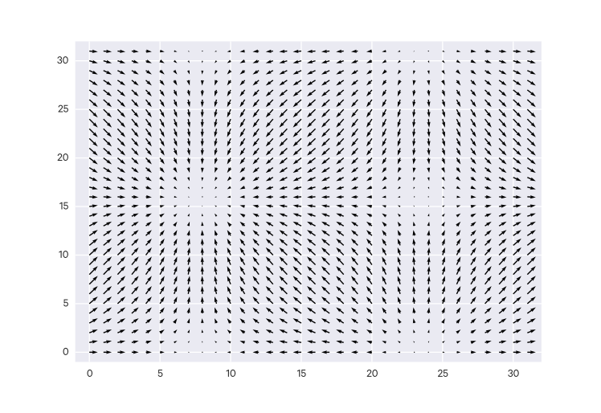An example of a 2D vector field
Divergence
Say we have a vector field $\vec V = x^2y\hat i + 3y \hat j$.
The divergence of that vector field is:
$$
div(\vec V) = \nabla \cdot \vec V
$$
That is, it is the dot product (which tells us how much two vectors move together) of the gradient and the vector field.
The divergence, which is scalar number for any point in a vector field, represents the change in volume density from an infinitesimal volume around a given point in that field. A positive divergence means the volume density is decreasing (more going out than coming in); a negative divergence means the volume density is increasing (more is coming in than going on, this is also called convergence). A divergence of 0 means the volume density is not changing.
Using our previously calculated divergence, say we want to look at the point $(4,3)$. We get the divergence $2 \cdot 4 \cdot 3 + 3 = 27$ This means that, in an infinitesimal volume around the point $(4,3)$, the volume is decreasing.
Curl
The curl measures the rotational effect of a vector field at a given point. Unlike divergence, where we are seeing how much the gradient and the vector field move together, we are interested in seeing how they move against each other. So we use their cross product:
$$
\text{curl}(\vec V) = \nabla \times \vec V
$$
Optimization with eigenvalues
Consider, for a symmetric matrix $A \in \mathbb S^n$ the following equality-constrained optimization problem:
Optimization problems with equality constraints are typically solved by forming the Lagrangian, an objective function which includes the equality constraints. For this particular problem (i.e. with the quadratic form), the Lagrangian is:
$$
\mathcal L (x, \lambda) = X^TAx - \lambda x^T x
$$
Where $\lambda$ is the Lagrange multiplier associated with the equality constraint. For $x^*$ to be the optimal point to the problem, the gradient of the Lagrangian has to be zero at $x^*$ (among other conditions), i.e.:
$$
\nabla_x \mathcal L (x, \lambda) = \nabla_x (x^TAx - \lambda x^Tx) = 2A^Tx - 2\lambda x = 0
$$
This is just the linear equation $Ax = \lambda x$, so the only points which can maximize (or minimize) $x^TAx$, assuming $x^Tx = 1$, are the eigenvectors of $A$.
Differential Equations
Differential equations are simply just equations that contain derivatives.